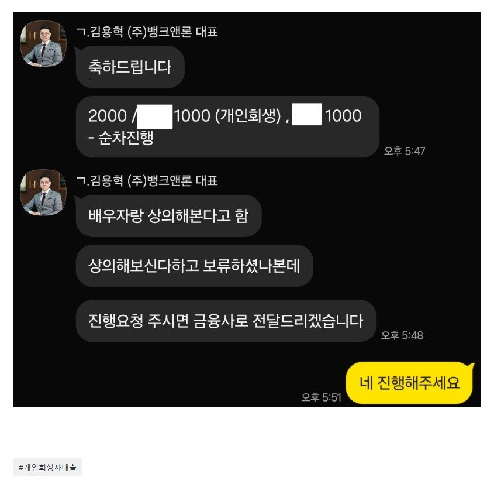

[개인회생자대출] 빠른 대출 상담 및 진행 감사드립니다.
개인회생 중이라 대출이 쉽지 않을 거라 생각했는데, 급하게 자금이 필요해 카페를 통해 상담을 받아보게 되었습니다.
현재 개인회생 36회 중 28회 납부했고, 미납은 2.48회 있었던 상황이라 걱정이 많았습니다. 그래도 뱅크앤론의 김용혁 이사님과 이현섭 과장님께 상담을 받으면서 제 상황에 맞게 꼼꼼하게 진행해 주셨고, 덕분에 원하던 2,000만 원 대출을 받을 수 있었습니다.
와이프가 바쁜 관계로 남편인 제가 대신 상담을 진행하고 서류도 준비했는데, 담당자분들께서 저와 아내 모두와 소통하며 하나하나 친절하게 안내해 주셔서 정말 큰 도움이 되었습니다. 번거로운 과정이었을 텐데도 끝까지 책임감 있게 진행해 주신 점에 진심으로 감사드립니다.
개인회생 중이라 고민이 많으신 분들이라면 혼자 걱정만 하지 마시고 먼저 상담부터 받아보시는 것을 추천드립니다. 저처럼 좋은 결과를 얻으실 수도 있습니다.
다시 한번 김용혁 이사님, 이현섭 과장님께 진심으로 감사드립니다.
추후 완납 후 다시 연락드릴테니 대환까지 잘 부탁드립니다.

https://cafe.naver.com/cityman88/311790